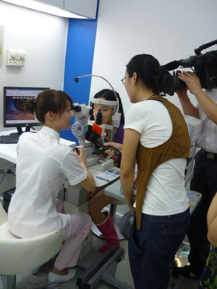
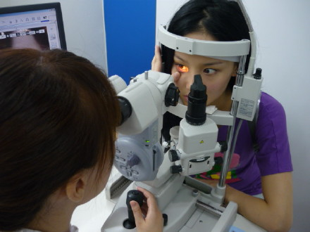
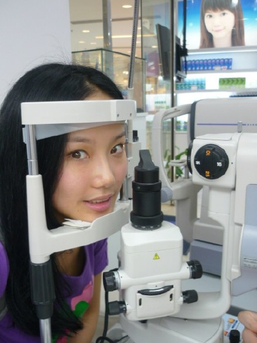
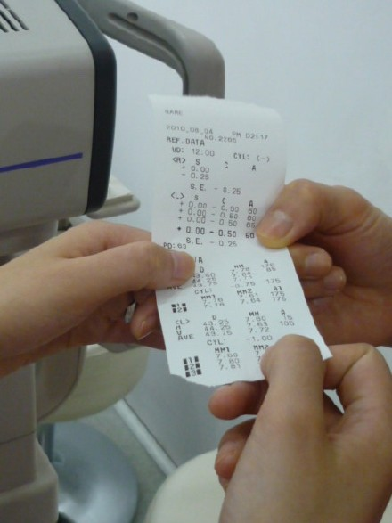
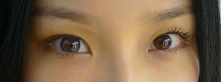

最近了录制了星尚频道《今日印象》的一期节目，主要任务是去港汇广场“艾视迪隐形眼镜专门店”完成了一次我的“初体验”！（记得要看8月13日星尚频道21：00开始的《今日印象》噢）
一开始听说隐形眼镜时，我有点犹豫。因为我的眼睛一直比较敏感，曾经几次被那薄薄的一片弄得泪牛满面。可是对方的编导说“那正好趁这次机会去艾视迪进行一次专业的检查吧。”于是。。。。。。


专业人员为我检查眼睛

专家说如果是初次配戴隐形眼镜，建议先检查是否适合配戴隐形眼镜。由于每个人的眼部情况略有差异，所以适合自己的隐形眼镜也有所不同。而我的检查结果呢。。。

说实话，这密密麻麻的代码弄得我是一头雾水。不过，专家说我的眼睛非常健康，含水量充足，没有充血现象，眼白也特别纯净（骄傲一下。。。。。。都是爹妈给的）
经过检查我的眼睛是佩戴可以隐形眼镜的。专家告诉我之前的惨痛经历是没有选择适合自己的隐形眼镜而造成的，因为每个人的眼部状况不一样，所以要根据基弧、透氧性、含水量等状况去选择。Oh,my god！这是来之前我从来没听到过的医学知识！
找找适合我的

隐形眼镜初体验
在专家的指导下，我初次顺利地戴上了神秘的紫色镜片。怎么样效果还不错吧！